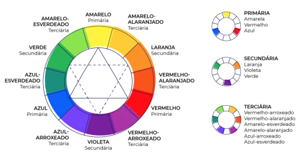

O círculo cromático é uma ferramenta que serve para nos ajudar a entender sobre combinação de diferentes cores e suas propriedades. Na prática, ele ajuda a desenvolver uma paleta certeira para suas criações.
Círculo cromático:
São as cores que mais possuem contraste entre si. Para perceber se as cores são complementares ou não, basta escolher uma cor e a cor que estiver no extremo oposto, é a cor complementar a cor escolhida.
Exemplos:
Ao contrário das cores complementares, as cores análogas são aquelas que não possuem muito contraste entre si. Para saber se uma cor análoga a cor escolhida ou não, basta ver as cores vizinhas a cor escolhida no círculo cromático.
Exemplos:
São cores similares com maior contraste do que as cores análogas. Para perceber isso, escolha uma cor no círculo cromático, pegue uma cor ao lado, pule uma cor e escolha a cor que vem em seguida a cor ignorada.
Exemplos:
São cores com maior contraste do que o exemplo anterior. Para perceber isso, escolha uma cor no círculo cromático, pule uma cor, escolha a outra cor, pule mais uma cor e escolha a que vem em seguida.
Exemplos:
Cores com ainda mais contraste. Para perceber isso, escolha uma cor de referência no círculo cromático, pule três cores, escolha a cor em seguida, pule mais três cores e escolha a cor em seguida.
Exemplos:
Cores com ainda mais contraste. Para perceber isso, escolha uma cor de referência no círculo cromático, pule duas cores, escolha a cor em seguida, pule mais duas cores e escolha a cor em seguida, pule mais duas cores e escolha a cor em seguida.
Exemplos:
São variações de uma mesma cor modificando a saturação e o brilho.